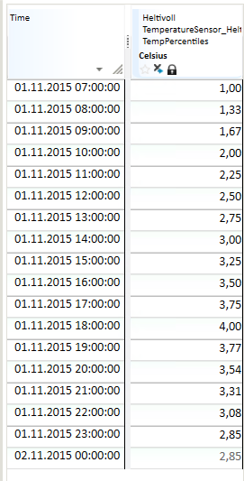

TIME_MASK
About the function
This function creates time series from its arguments, normally used as time masks (a series with 1 or 0 as value), but not limited to only this type.
Syntax
There two main variants of this function. The general variant:
A special variant using a holiday file:
TIME_MASK(s,S,D,s) and TIME_MASK(s,S,D)
The principle for the function is that you specify a repeat frequency, an array of time points and a corresponding array of function values. The time points are repeated at the frequency given as the first argument. The last argument allows you to specify the resolution for the result series.
| # | Type | Description |
|---|---|---|
| 1 | s | Repeat frequency. For values, see Repeat frequency. |
| 2 | S | Time point description array in any format. See Time point description array. |
| 3 | D | Array of values which apply to the time points given in the preceding argument. |
| 4 | s | Result series resolution. For values, see Resolution. |
Repeat frequency
This argument consists of a time span code in addition to some options. The time span code can be one of the following calendar codes:
| Symbol | Definition |
|---|---|
| WEEKDAY | Weekdays at daytime. Gives the value 1 at time steps within 'workhours'. |
| WEEKEND | Night and weekend - the opposite of WEEKDAY for all days except WEEKEND. |
| HOLIDAY | Night, weekends and holidays - the opposite of 'NORMALDAY'. |
| NORMALDAY | Weekday at daytime, except for holidays - same as 'WEEKDAY', but holidays are excluded ('holiday' and 'mholidays'). |
The following frequency codes can be used:
| Symbol | Definition |
|---|---|
| MIN15 | Quarter of an hour |
| HOUR | Hour |
| DAY | 24-hour period |
| WEEK | Week |
| MONTH | Month |
| YEAR | Year |
| NONE | Absolute time points, no repetition frequency |
The options to frequency code are defined in <> brackets.
| Symbol | Definition |
|---|---|
| The result series gets linear curve type. | |
| Local DST calendar used when moving time points with given frequency. | |
| Database configured calendar used when moving time points with given frequency. | |
| UTC calendar used when moving time points with given frequency. |
Tip! You may incorporate calendar options into frequency codes as a prefix code. Valid calendar prefix codes are LOCAL, STANDARD, UTC and DB. For example frequency code LOCALDAY is the same as DAY
Time point description array
You can use the following special codes instead of a list of definitions.
| Symbol | Definition |
|---|---|
| MONTHLY | Transformed to 12 time points representing start of each month, starting with January |
| WEEKLY | Transformed to 52 time points representing start of each week |
| DAILY | Transformed to 7 time points representing start of Monday, Tuesday etc |
| HOURLY | Transformed to 24 time points representing, from hour 0 to 23 |
| QUARTERLY | Transformed to 4 time points |
If you use one of these codes, you must still supply the correct number of values in the next argument.
Resolution
| Symbol | Definition |
|---|---|
| MIN15 | Quarter of an hour |
| HOUR | Hour |
| DAY | 24-hour period |
| WEEK | Week |
| MONTH | Month |
| YEAR | Year |
| VARINT | Breakpoint |
Example
Result time series = @TIME_MASK('DAY', {'DAY+07h', 'DAY+10h', 'DAY+14h', 'DAY+18h'}, {1,2,3,4},'HOUR')
This gives a time series with daily repeat frequency and hourly time resolution. The presentation of data values is step wise.
The table shows the result from a day on winter time (normal time). The definition of the expression has no reference to a defined time zone and uses the time zone of the database.
Note! If the same expressions are run for a day in summer time, the values are shifted to one hour later.

Result time series = @TIME_MASK('DAY', {'DAY+07h', 'DAY+10h', 'DAY+14h', 'DAY+18h'}, {1,2,3,4},'HOUR')
This gives a time series with daily repeat frequency and hourly time resolution. The presentation of data values is linear.

Result time series = @TIME_MASK('DAY', {'DAY+07h', 'DAY+10h', 'DAY+14h', 'DAY+18h'}, {1,2,3,4},'VARINT')
This gives a time series with daily repeat frequency and breakpoint time resolution. The presentation of data values is step wise.

TIME_MASK(S,D)
This syntax variant has no repeat frequency, the given points in time are absolute. Gives the same effect as using TIME_MASK(s,S,D) with repeat frequency 'NONE'.
TIME_MASK(s) and TIME_MASK(s,s)
These variants let you define a logical time series from criteria given in by parameters in a text file. TIME_MASK(s) references the default calendar file holidays.txt. TIME_MASK(s,s) uses a user-defined file. Several user-defined files can be used in the same report. The default resolution is hours. If the resolution is 15-minute periods (TIMESTEP {MIN 15,1}) the result series while have this resolution.
As an example, the function can be used to find the power usage in specific periods of the day, for instance in connection with low load, peak load etc.
Example
@TIME_MASK(s,s)
The MyHolidayfile.txt is a user defined calendar file:
# Filename: MyHolidayfile.txt
# Tariff template: time definitions
workhours 06:00 22:00
weekend 6 7
# Fixed holidays (date in American format, year/month/day)
holiday 1/1 1/6 4/30 5/1 12/24 12/25 12/26 12/31 1997/6/20 1997/08/22
mholiday es-3 es-2 es+1 es+39 es+40 es+50
seasons 12/1 4/1 6/1 9/1
lseason 4/1 11/1
The function returns the following according to the calendar file definition:
| Expression | Result mask |
|---|---|
| @TIME_MASK('WEEKDAY',’MyHolidayfile.txt’) | 1 for all hours (or 15-minute periods) from 06:00 to 22:00 on all days except for weekends, i.e. Monday to Friday inclusive. 0 otherwise. |
| @TIME_MASK('WEEKEND',’MyHolidayfile.txt’) | 1 for all hours (or 15-minute periods) from 22:00 to 06:00 from Monday to Friday, and 1 for the entire day on Saturday and Sunday. 0 otherwise. |
| @TIME_MASK('HOLIDAY',’MyHolidayfile.txt’) | Same mask as for "WEEKEND", in addition to 1 for all fixed and moveable public holidays defined in the current file. See "holiday" and "mholidays". 0 otherwise. |
| @TIME_MASK('NORMALDAY',’MyHolidayfile.txt’) | Opposite of WEEKDAY. |
The result above can be illustrated in a figure showing the difference between the various masks: